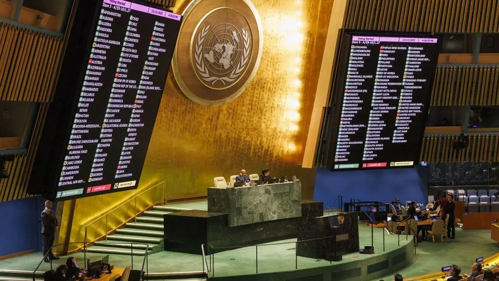
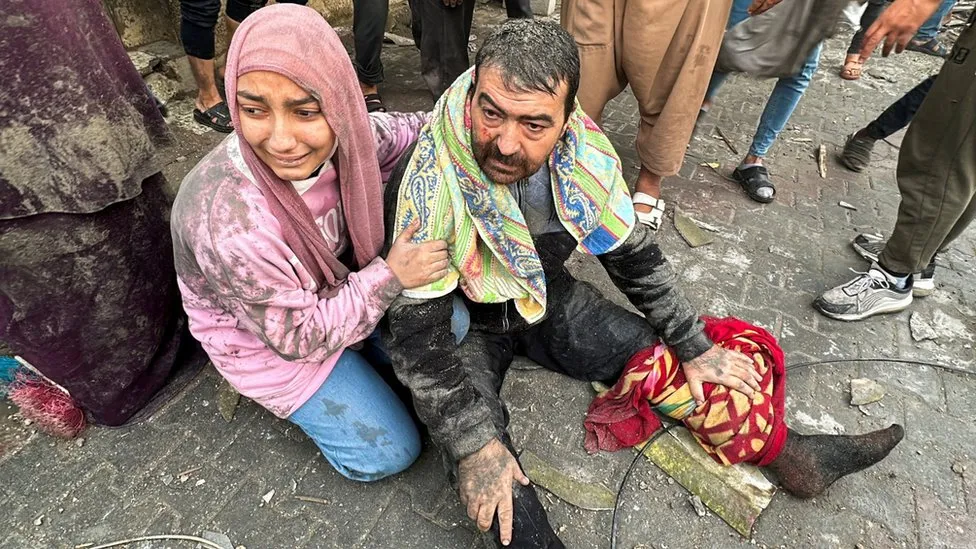

Israel Gaza: UN General Assembly demands immediate ceasefire

The UN General Assembly has overwhelmingly adopted a non-binding resolution demanding an immediate humanitarian ceasefire in Gaza.
153 member states in the 193-strong assembly voted in favour and 10 including the US and Israel against, with 23 abstentions.
Palestinian representative Riyad Mansour said it was a "historic day".
Israel's envoy Gilad Erdan said before the vote that a "ceasefire only serves to prolong Hamas's reign of terror".
Senior Hamas official Bassem Naeem told the BBC that the passing of the resolution confirmed that "the prevailing international will is in favour of stopping the aggression against the Palestinian people".
Although the US voted against the resolution, US President Joe Biden had earlier warned that Israel was losing international support because of "indiscriminate bombing" of Palestinians.
He also expressed disagreement over plans for the future of the Gaza Strip, saying the Israeli government appeared opposed a two-state solution with the Palestinians.

A woman cries as she hugs an injured man after an Israeli air strike on Rafah, southern Gaza
vote was the second attempt by the General Assembly to stop hostilities. In October, it had called for "a humanitarian truce" in a resolution adopted with 121 votes in favour, 14 against and 44 abstentions.
Although non-binding, such resolutions are seen as a powerful measure of international opinion, analysts say.
UN Secretary General António Guterres has long been pushing for a humanitarian ceasefire to prevent a "complete breakdown of public order" in Gaza.
Israel has been carrying out air strikes and a ground offensive in the Gaza Strip after a Hamas attack on Israel on 7 October in which Israeli officials say 1,200 were killed and another 240 taken hostage. Some of the abductees were later released during a brief truce.
The Hamas-run health ministry in Gaza says Israel has killed more than 18,200 people and injured at least 50,000, including many women and children, during its ongoing military operation.